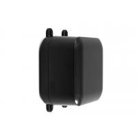

Project template containing the recommended board layout for Hammond Manufacturing 1557B:
Gray: 1557BGY - 164-1557BGY-ND
Black: 1557BBK - 164-1557BBK-ND
Gray: 1557BAGY - 164-1557BAGY-ND
Black: 1557BABK - 164-1557BABK-ND
|
|
 |
The "Dwgs.User" layer contains all critical dimmensions in milimeters[inches].
The "Edge.Cuts" layer contains the maximum board outline and holes to align with board standoffs.
PCB Preview: